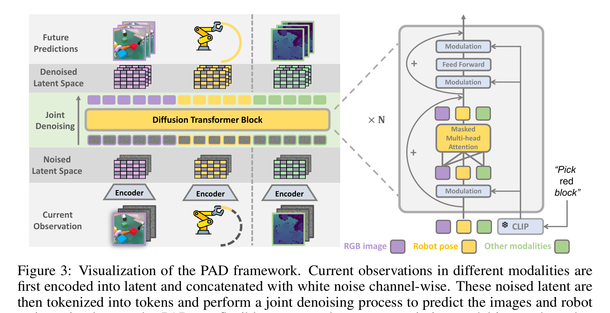

Prediction with Action: Visual Policy Learning via Joint Denoising Process
Guo 等 · NeurIPS 2024 · arXiv:2411.18179 · Zotero J39RXXZD
PAD 把未来 RGB、机器人姿态和其他模态各自编码到 latent，再拼成一个 token 序列交给 DiT 同时去噪；因此未来世界和动作不是两个串联模块，而是同一个条件生成过程中的不同变量。
§1 Introduction：预测未来与采取动作为什么应该共享一个去噪过程
视频 diffusion 通过去噪未来图像学习“世界怎样变化”，Diffusion Policy 通过去噪动作学习“机器人怎样移动”。两者表面输出不同，底层却受同一场景动力学约束：动作决定视觉变化，合理视觉变化也限制可执行动作。此前级联方法通常先生成图像、再由策略或 IDM 取回动作，两个模型各自优化，动作无法反过来约束预测，接口还会制造分布偏移。
PAD 用一个多模态 DiT 同时接收图像 latent、机器人状态和动作，并联合预测未来图像噪声与动作噪声。机器人示范提供两种监督；普通视频缺动作时只计算视觉分支损失。这样大规模 actionless video 能改善共享动力学表示，而部署时动作可直接从联合模型采样，不必先完整生成 RGB 视频。
展开原文 · 核心主张
“predict future images and actions via joint denoising”
§2 Related Work：视频 diffusion、Diffusion Policy 与两阶段视觉规划
生成模型路线从图像编辑和视频预测中学习结果分布；机器人 diffusion policy 则在多模态连续动作上优于简单高斯回归。UniPi、SuSIE 等视觉规划方法把两者串联：先预测目标或未来，再由低层策略执行。其好处是模块可替换，弱点是世界预测与动作学习彼此看不到对方的误差。
PAD 的 Joint-Diffusion 不是简单共享编码器，而是让图像和动作 token 在同一 DiT attention 中交互、在同一随机训练样本里被去噪。它相对 GR-1 的 Joint-AR 区别在生成机制：GR-1 自回归/回归地读取动作与图像，PAD 使用连续 diffusion timestep 和噪声预测，更自然地表示多峰动作。
§3 从两个预测器变成一个联合分布
- $I$
- 未来 RGB 帧；VAE 压缩后在 latent 中扩散。
- $A$
- 末端执行器位姿、旋转和夹爪状态；MLP 编码。
- $E$
- 可选额外模态，例如深度；不存在时用 mask 排除。
- $c,l$
- 当前多模态观测与语言指令。
§4 Joint Denoising DiT

1. 各模态进入 latent
统一的是 token/DiT 空间，不要求原始张量同形。
输入是什么：当前任务提供的原始观测、指令、机器人状态或训练数据。先明确这些输入，才能判断后面的结论是否用了部署时拿不到的信息。
这一步究竟做什么：本步骤执行“各模态进入 latent”。具体来说，统一的是 token/DiT 空间，不要求原始张量同形。 这里处理的只是整条链路中的一个接口：把上一步的结果整理成下一步能够正确读取和继续计算的形式。
输出到哪里：一组比原始输入更紧凑的内部特征；它不是最终动作或画面。这个结果会交给下一步“条件与噪声拼接”继续处理。
为什么不能省略：模型不能高效地直接在所有原始像素和长序列上推理；这一步把信息压成后续模块能处理、比较和复用的形式。
2. 条件与噪声拼接
当前观测保持干净，未来变量从噪声开始。
输入是什么：来自上一步“各模态进入 latent”的产物：一组比原始输入更紧凑的内部特征；它不是最终动作或画面。本步骤还会按论文设置读取当前条件、时间步或训练信号。
这一步究竟做什么：本步骤执行“条件与噪声拼接”。具体来说，当前观测保持干净，未来变量从噪声开始。 这里处理的只是整条链路中的一个接口：把上一步的结果整理成下一步能够正确读取和继续计算的形式。
输出到哪里：一套固定且可复现的输入条件，后续所有模型都必须在这套条件下生成或行动。这个结果会交给下一步“共同去噪”继续处理。
为什么不能省略：随机起点允许模型表达多种合理结果；逐步生成则把无结构噪声限制到训练数据支持的动作或视频分布。
3. 共同去噪
视觉 token 可直接注意动作 token，反之亦然。
输入是什么：来自上一步“条件与噪声拼接”的产物：一套固定且可复现的输入条件，后续所有模型都必须在这套条件下生成或行动。本步骤还会按论文设置读取当前条件、时间步或训练信号。
这一步究竟做什么：本步骤执行“共同去噪”。具体来说，视觉 token 可直接注意动作 token，反之亦然。 这个动作会真正改变环境，所以系统还要读取执行后的新观测，检查模型预期与现实之间的差距。
输出到哪里：一个或多个候选未来、动作或轨迹，以及必要的中间状态。这个结果会交给下一步“只解码有效模态”继续处理。
为什么不能省略：随机起点允许模型表达多种合理结果；逐步生成则把无结构噪声限制到训练数据支持的动作或视频分布。
4. 只解码有效模态
机器人样本同时监督图像和动作；普通视频只监督图像。
输入是什么：来自上一步“共同去噪”的产物：一个或多个候选未来、动作或轨迹，以及必要的中间状态。本步骤还会按论文设置读取当前条件、时间步或训练信号。
这一步究竟做什么：本步骤执行“只解码有效模态”。具体来说，机器人样本同时监督图像和动作；普通视频只监督图像。 这个动作会真正改变环境，所以系统还要读取执行后的新观测，检查模型预期与现实之间的差距。
输出到哪里：经过本步骤处理、含义更明确的中间结果。这是图中这条链路的最终产物，随后会进入真实执行、模型更新或指标评测。
为什么不能省略：它把前面得到的内部结果落实为可执行动作、可训练模型或可解释指标，完成从方法到结果的最后一步。
§5 多模态扩散目标
- $\mathcal L_{diff}^{I}$
- 图像/未来视觉分支的去噪损失，学习动作后世界外观。
- $\mathcal L_{diff}^{A}$
- 动作分支的去噪损失，直接监督可执行控制序列。
- $\mathcal L_{diff}^{E}$
- 额外状态或环境表征分支的生成约束。
- $\lambda_I,\lambda_A,\lambda_E$
- 控制三种梯度的相对强度；联合训练是否有益必须排除某一分支仅靠更大损失支配共享骨干。
每一项都是相应模态的噪声预测误差。$λ$ 负责平衡尺度；缺失模态既不参与注意力，也不产生伪监督。联合性来自同一个 DiT 的跨模态注意力，而不是把三个损失简单相加这一形式。
§6 为什么能混合机器人与互联网视频
§7 价值与边界
§8 实验归因与复现：联合去噪是否比两个任务并排训练更强
最小可信复现清单
- 图像 VAE latent、动作归一化、token 数与 attention mask。
- 图像和动作是否共享 diffusion timestep、噪声 schedule 与预测参数化。
- 缺动作视频 batch 如何屏蔽 action loss，空动作 token 如何表示。
- 固定机器人数据的 video scaling curve 与跨域视频负迁移结果。
- 未来图像质量、动作去噪误差、控制成功率和端到端延迟同时报告。
PAD 的主张不是“视频损失也有用”，而是世界预测与动作生成共享联合去噪状态后，可以互相提供动力学约束。